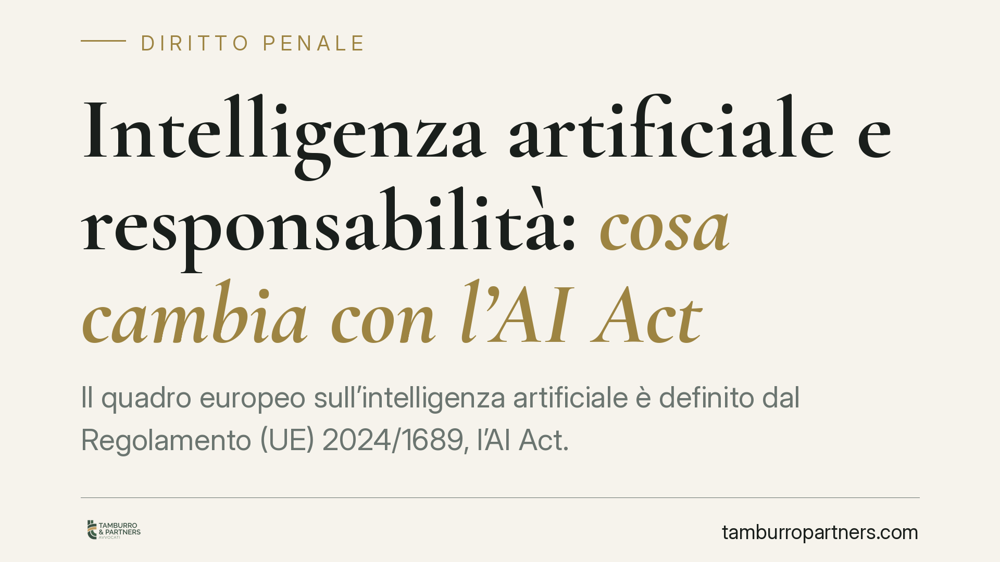

Intelligenza artificiale e responsabilità: cosa cambia con l'AI Act
Il quadro europeo sull'intelligenza artificiale è definito dal Regolamento (UE) 2024/1689, l'AI Act. Il recepimento nazionale è in corso e solleva questioni concrete di responsabilità civile e penale per le imprese che integrano sistemi di IA nei propri processi. Vediamo cosa è già certo, cosa è ancora in itinere e come muoversi da subito.

Il quadro normativo: cosa è certo e cosa è in itinere
Occorre una premessa di metodo, perché sul tema circolano riferimenti non sempre verificabili.
La fonte certa è il Regolamento (UE) 2024/1689 — il cosiddetto *AI Act* — direttamente applicabile negli Stati membri secondo il calendario scaglionato previsto dallo stesso testo. Il Regolamento classifica i sistemi di IA per livello di rischio (inaccettabile, alto, limitato, minimo) e impone obblighi crescenti in funzione di tale classificazione.
Diverso è il piano della responsabilità da danno. La disciplina europea in materia è oggetto di strumenti distinti dall'AI Act: in particolare la revisione della direttiva sulla responsabilità da prodotto e la proposta di direttiva sulla responsabilità da IA (*AI Liability Directive*), che seguono un proprio iter e un proprio recepimento. È essenziale non attribuire all'AI Act contenuti che appartengono a queste altre fonti.
Sul versante interno, il legislatore italiano sta lavorando al recepimento e all'adeguamento dell'ordinamento. Allo stato, invitiamo a trattare eventuali estremi puntuali di decreti attuativi come normativa di prossimo recepimento, verificandone la reale pubblicazione prima di fondarvi decisioni operative.
La responsabilità civile: le categorie in gioco
In assenza di una disciplina speciale già pienamente operativa, l'uso di sistemi di IA va letto alla luce delle categorie ordinarie del Codice civile.
Parte della dottrina riconduce l'impiego di sistemi ad alto rischio all'art. 2050 c.c. (esercizio di attività pericolose), con l'effetto di un'inversione dell'onere probatorio a carico di chi svolge l'attività. Si tratta però di una tesi interpretativa, non di un automatismo: l'applicabilità dell'art. 2050 dipende dalla concreta natura del sistema e dal contesto d'uso, e sarà la giurisprudenza a definirne i confini.
Restano poi rilevanti la responsabilità contrattuale verso il cliente e quella extracontrattuale ex art. 2043 c.c. verso i terzi. Il punto critico, in tutti i casi, è la prova della catena causale: dimostrare cosa ha determinato l'output dannoso.
La responsabilità penale e il D.lgs. 231/2001
Sul piano penale il principio resta la personalità della responsabilità: risponde chi ha agito con dolo o colpa. L'IA non è un soggetto imputabile. Il tema si sposta quindi sulla sorveglianza umana significativa: chi delega a un sistema una decisione e omette il controllo dovuto può rispondere a titolo di colpa.
Per le imprese entra in gioco il D.lgs. 231/2001 sulla responsabilità amministrativa degli enti. Se un reato-presupposto viene commesso nell'interesse o a vantaggio dell'ente anche mediante l'uso di sistemi di IA, la carenza di modelli organizzativi idonei diventa fonte di responsabilità dell'ente stesso. È un'area in cui i Modelli di organizzazione e gestione (MOG) andranno aggiornati.
Implicazioni pratiche per l'impresa
Per chi integra IA nei propri processi cambiano tre cose in concreto.
Primo, l'onere di documentare: log, tracciabilità delle decisioni e documentazione progettuale diventano lo strumento con cui dimostrare diligenza e ricostruire la catena causale in caso di contenzioso.
Secondo, la governance interna: la sorveglianza umana non è più una buona prassi, ma un presidio di riduzione del rischio giuridico.
Terzo, i rapporti contrattuali con fornitori e sviluppatori dei sistemi, dove ripartire responsabilità e obblighi informativi.
Cosa fare in concreto
- Mappa i sistemi di IA in uso e classificali per livello di rischio secondo l'AI Act, individuando quelli qualificabili come ad alto rischio.
- Definisci procedure di sorveglianza umana documentate, con punti di controllo e soggetti responsabili per ciascun processo automatizzato.
- Conserva la documentazione: log operativi, tracciabilità delle decisioni e documentazione progettuale, per poter provare diligenza e catena causale.
- Aggiorna il MOG 231, integrando i rischi connessi all'uso dell'IA e i relativi presìdi di controllo.
- Verifica e rinegozia i contratti con fornitori e sviluppatori, definendo ripartizione di responsabilità, garanzie e obblighi informativi.
Consigliamo di monitorare l'evoluzione del recepimento nazionale e di non anticipare adempimenti su testi non ancora pubblicati, mantenendo invece pronte le misure organizzative già oggi utili.
---
*Contributo informativo a cura di Tamburro & Partners Avvocati — Avv. Giuseppe Tamburro. Non costituisce parere legale.*
Ogni condominio ha una storia a sé.
Se gestisci un'amministrazione e vuoi un confronto su una specifica questione condominiale, scrivi allo studio. Ti rispondiamo entro un giorno lavorativo.